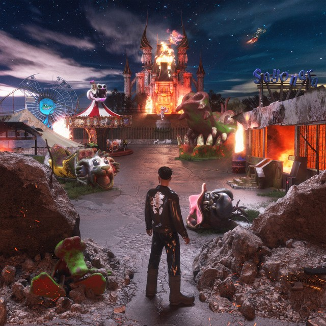
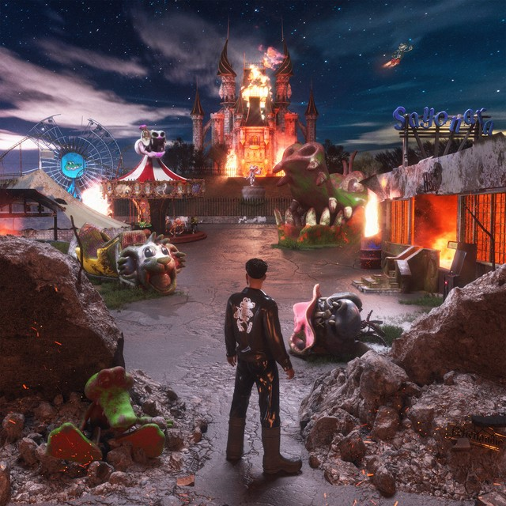

Produccion musical
¿Por que me llama la atencion?
Para mi es unico el hecho de poder explorar cada sonido y mas en un pais como lo es guatemala en donde hay mucho de que hablar y sentir y quisiera usar la musica para poder contar todo aquello que no puedo decir con palabras.
Tiempo que quiero dedicarle
Quiero dedicarle un muy buen tiempo a la musica ya que como mencione antes quisiera expresar mucho mas de lo que se y e tomado algunas lecciones y instalado programas pero sobre todo quiero practicar mucho.
Albumes que considero importantes y motivacion

 

Considerados para mi una gran inspiracion y motivacion para seguir aprendiendo y practicando.

Dato Extra
Yo me reuina con un amigo que vive cerca de mi a escuchar musica practicamente todo el dia y tal vez fue desde ahi que me Gusto la idea de hacer musica por todo lo que desde pequeño escuchaba.